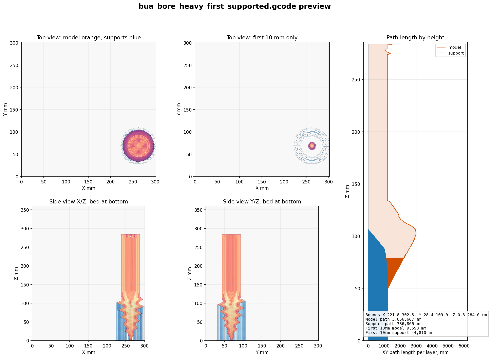

bua_bore Previous G-code Preview
Primary visualization for the original sliced file: bua_bore.gcode.
Print state checked before publishing: OctoPrint was idle. This page is visualization only.
Previously Sliced G-code
This is the original 50% infill slice. The side views show the dense/complex section at the bed and the long cylinder extending upward.

File
bua_bore.gcode
Bounds
69.2 x 70.4 x 284.0 mm
Slicer estimate
1d 3h 33m
Bottom/top path ratio
7.0x
Side-by-side
Previous slice: bua_bore.gcode.
Flipped supported slice kept for comparison only.
